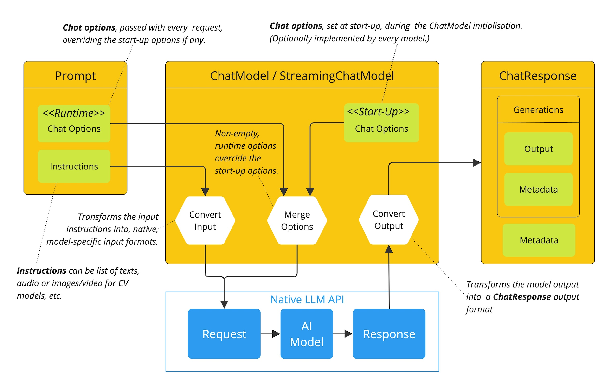
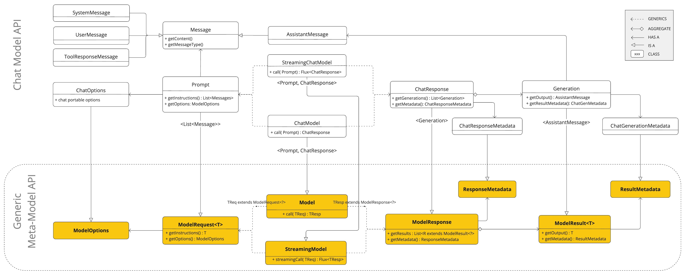

聊天模型 API #
聊天模型 API 使开发人员能够将 AI 驱动的聊天完成功能集成到其应用程序中。它利用预先训练的语言模型，例如 GPT （Generative Pre-trained Transformer），以自然语言生成对用户输入的类似人类的响应。
API 的工作原理通常是向 AI 模型发送提示或部分对话，然后 AI 模型根据其训练数据和对自然语言模式的理解生成对话的完成或延续。然后，完成的响应将返回给应用程序，应用程序可以将其呈现给用户或将其用于进一步处理。
Spring AI Chat 模型 API 旨在成为一个简单且可移植的接口，用于与各种 [
AI 模型](../concepts.html#_models)交互，允许开发人员以最少的代码更改在不同模型之间切换。这种设计与 Spring 的模块化和可互换性理念一致。
此外，在用于输入封装的 Prompt 和用于输出处理的 ChatResponse 等配套类的帮助下，聊天模型 API 统一了与 AI 模型的通信。它管理请求准备和响应解析的复杂性，提供直接且简化的 API 交互。
您可以在 [
可用实施](#_available_implementations) 部分找到有关[
可用实施](#_available_implementations)的更多信息，并在 [
聊天模型比较](chat/comparison.html) 部分找到详细比较。
API 概述 #
本节提供了 Spring AI Chat 模型 API 接口和相关类的指南。
聊天模型 #
以下是 [ ChatModel]( https://github.com/spring-projects/spring-ai/blob/main/spring-ai-client-chat/src/main/java/org/springframework/ai/chat//model/[ChatModel](https://github.com/spring-projects/spring-ai/blob/main/spring-ai-client-chat/src/main/java/org/springframework/ai/chat//model/ChatModel.java).java) 接口定义：
public interface ChatModel extends Model<Prompt, ChatResponse> {
default String call(String message) {...}
@Override
ChatResponse call(Prompt prompt);
}
带有 String 参数的 call（） 方法简化了初始使用，避免了更复杂的 Prompt 和 ChatResponse 类的复杂性。在实际应用程序中，更常见的是使用 call（） 方法，该方法采用 Prompt 实例并返回 ChatResponse。
StreamingChatModel （流式聊天模型） #
下面是 [ StreamingChatModel]( https://github.com/spring-projects/spring-ai/blob/main/spring-ai-model/src/main/java/org/springframework/ai/chat/model/[StreamingChatModel](https://github.com/spring-projects/spring-ai/blob/main/spring-ai-model/src/main/java/org/springframework/ai/chat/model/StreamingChatModel.java).java) 接口定义：
public interface StreamingChatModel extends StreamingModel<Prompt, ChatResponse> {
default Flux<String> stream(String message) {...}
@Override
Flux<ChatResponse> stream(Prompt prompt);
}
stream（） 方法采用类似于 ChatModel 的 String 或 Prompt 参数，但它使用反应式 Flux API 对响应进行流式处理。
提示 #
[[Prompt](https://github.com/spring-projects/spring-ai/blob/main/spring-ai-client-chat/src/main/java/org/springframework/ai/chat/prompt/Prompt.java)](https://github.com/spring-projects/spring-ai/blob/main/spring-ai-client-chat/src/main/java/org/springframework/ai/chat/prompt/[Prompt](https://github.com/spring-projects/spring-ai/blob/main/spring-ai-client-chat/src/main/java/org/springframework/ai/chat/prompt/Prompt.java).java) 是一个 ModelRequest，它封装了 [
Message](
https://github.com/spring-projects/spring-ai/blob/main/spring-ai-model/src/main/java/org/springframework/ai/chat/messages/[Message](https://github.com/spring-projects/spring-ai/blob/main/spring-ai-model/src/main/java/org/springframework/ai/chat/messages/Message.java).java) 对象列表和可选的模型请求选项。下面的清单显示了 [[Prompt](https://github.com/spring-projects/spring-ai/blob/main/spring-ai-client-chat/src/main/java/org/springframework/ai/chat/prompt/Prompt.java)](https://github.com/spring-projects/spring-ai/blob/main/spring-ai-client-chat/src/main/java/org/springframework/ai/chat/prompt/[Prompt](https://github.com/spring-projects/spring-ai/blob/main/spring-ai-client-chat/src/main/java/org/springframework/ai/chat/prompt/Prompt.java).java) 类的截断版本，不包括构造函数和其他实用程序方法：
public class Prompt implements ModelRequest<List<Message>> {
private final List<Message> messages;
private ChatOptions modelOptions;
@Override
public ChatOptions getOptions() {...}
@Override
public List<Message> getInstructions() {...}
// constructors and utility methods omitted
}
消息 #
Message 接口封装了 Prompt 文本内容、元数据属性的集合和称为 MessageType 的分类。
接口定义如下：
public interface Content {
String getText();
Map<String, Object> getMetadata();
}
public interface Message extends Content {
MessageType getMessageType();
}
多模式消息类型还实现了 ```MediaContent` 接口，该接口提供了 Media`` 内容对象列表。
public interface MediaContent extends Content {
Collection<Media> getMedia();
}
Message 接口具有各种实现，这些实现对应于 AI 模型可以处理的消息类别：
 聊天完成终端节点，根据对话角色区分消息类别，由
聊天完成终端节点，根据对话角色区分消息类别，由 MessageType 有效映射。
例如，OpenAI 可以识别不同对话角色的消息类别，例如系统 、 用户 、 功能或助手 。
虽然术语 MessageType 可能意味着特定的消息格式，但在此上下文中，它有效地指定了消息在对话中扮演的角色。
对于不使用特定角色的 AI 模型，`UserMessage``` 实现充当标准类别，通常表示用户生成的查询或说明。要了解实际应用以及 Prompt和Message之间的关系，尤其是在这些角色或消息类别的上下文中，请参阅Prompt``s 部分中的详细说明。
聊天选项 #
表示可以传递给 AI 模型的选项。ChatOptions 类是 ModelOptions 的子类，用于定义可传递给 AI 模型的几个可移植选项。ChatOptions 类定义如下：
public interface ChatOptions extends ModelOptions {
String getModel();
Float getFrequencyPenalty();
Integer getMaxTokens();
Float getPresencePenalty();
List<String> getStopSequences();
Float getTemperature();
Integer getTopK();
Float getTopP();
ChatOptions copy();
}
此外，每个特定于模型的 ChatModel/StreamingChatModel 实现都可以有自己的选项，这些选项可以传递给 AI 模型。例如，OpenAI 聊天完成模型有自己的选项，如 logitBias、seed 和 user。
这是一项强大的功能，允许开发人员在启动应用程序时使用特定于模型的选项，然后在运行时使用 Prompt 请求覆盖这些选项。
Spring AI 提供了一个复杂的系统来配置和使用聊天模型。它允许在启动时设置默认配置，同时还提供了根据每个请求覆盖这些设置的灵活性。这种方法使开发人员能够轻松使用不同的 AI 模型并根据需要调整参数，所有这些都在 Spring AI 框架提供的一致界面中完成。
以程图说明了 Spring AI 如何处理聊天模型的配置和执行，并结合了启动和运行时选项：

启动和运行时选项的分离允许全局配置和特定于请求的调整。
聊天响应 #
ChatResponse 类的结构如下：
public class ChatResponse implements ModelResponse<Generation> {
private final ChatResponseMetadata chatResponseMetadata;
private final List<Generation> generations;
@Override
public ChatResponseMetadata getMetadata() {...}
@Override
public List<Generation> getResults() {...}
// other methods omitted
}
[
ChatResponse](
https://github.com/spring-projects/spring-ai/blob/main/spring-ai-model/src/main/java/org/springframework/ai/chat/model/[ChatResponse](https://github.com/spring-projects/spring-ai/blob/main/spring-ai-model/src/main/java/org/springframework/ai/chat/model/ChatResponse.java).java) 类保存 AI 模型的输出，每个 Generation 实例都包含单个提示可能产生的多个输出之一。
ChatResponse 类还携带有关 AI 模型响应的 ChatResponseMetadata 元数据。
代 #
最后，[
Generation](
https://github.com/spring-projects/spring-ai/blob/main/spring-ai-model/src/main/java/org/springframework/ai/chat/model/[Generation](https://github.com/spring-projects/spring-ai/blob/main/spring-ai-model/src/main/java/org/springframework/ai/chat/model/Generation.java).java) 类从 ModelResult 扩展来表示模型输出（助手消息）和相关元数据：
public class Generation implements ModelResult<AssistantMessage> {
private final AssistantMessage assistantMessage;
private ChatGenerationMetadata chatGenerationMetadata;
@Override
public AssistantMessage getOutput() {...}
@Override
public ChatGenerationMetadata getMetadata() {...}
// other methods omitted
}
可用的实现 #
此图说明了统一接口 ChatModel 和 StreamingChatModel，用于与来自不同提供商的各种 AI 聊天模型进行交互，从而允许在不同的 AI 服务之间轻松集成和切换，同时为客户端应用程序保持一致的 API。

- OpenAI 聊天完成 （流媒体、多模式和函数调用支持）
- Microsoft Azure Open AI Chat Completion（支持直播和函数调用）
- Ollama 聊天完成 （流媒体、多模态和函数调用支持）
- Hugging Face Chat 完成 （不支持流式传输）
- Google Vertex AI Gemini 聊天完成功能（支持流式、多模态和函数调用）
- 亚马逊基岩版
- Mistral AI 聊天完成 （支持流媒体和函数调用）
- Anthropic Chat Completion （流媒体和函数调用支持）
聊天模型 API #
Spring AI Chat 模型 API 构建在 Spring AI 通用模型 API 之上，提供特定于 Chat 的抽象和实现。这允许在不同 AI 服务之间轻松集成和切换，同时为客户端应用程序保持一致的 API。下面的类图说明了 Spring AI Chat 模型 API 的主要类和接口。
